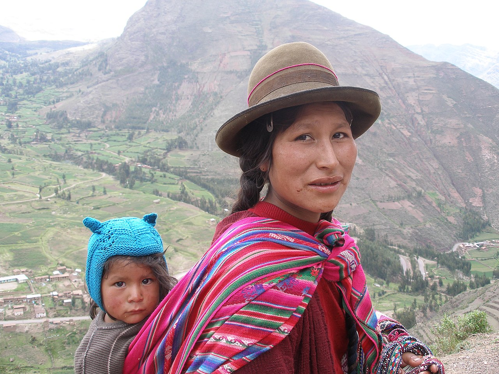

Перу — полиэтническая, мультикультурная страна, где проживает 72 этнолингвистические
группы, объединяемые в 16 языковых семей.
Численность населения, по данным переписи 2023 года, составляет 34 504 384 человек. Большая часть
населения
проживает
у океанического побережья, на территории косты — 58 %, где наблюдается наиболее интенсивный прирост. Доля
населения горного
андского региона — сьерры — 28 %, но в последнее время численность населения здесь сокращается. На
территории
сельвы проживает
13,9 %, но регион интенсивно развивается и осваивается, численность населения постоянно увеличивается
значительными темпами.

Кечуа составляют 22,3% от населения*
В национальном составе Перу в настоящий момент преобладают метисы (60 %), процент которых постоянно
растет
благодаря
процессу ассимиляции. Основа коренного населения — индейцы кечуа, потомки инков. Их доля составляет 22 %.
Кечуа
проживают
в горных районах, на высокогорьях Анд. Другие этнические группы: афроперуанцы, проживающие на
северо-западном и
центральном
побережье Перу (3,6 %); индейцы аймара, проживающие в регионе Пуно, на границе с Боливией (2,4 %); коренные
племена Амазонии,
проживающие в сельве; японские и китайские диаспоры и т. д.